```{r}
#install libraries
#install.packages("beanplot")
#install.packages("summarytools")
#install.packages("ggplot2")
#install.packages("tidyr")
#install.packages("gridExtra")
#install.packages("scales")
#install.packages("zoo")
#install.packages("dplyr")
#install.packages("gbm")
#install.packages("glmnet")
#install.packages("xgboost")
#install.packages("e1071")
#install.packages("caret")
#install.packages("rpart")
#install.packages("ada")
##Import libraries
library(beanplot)
library(summarytools)
library(ggplot2)
library(tidyr)
library(gridExtra)
library(scales)
library(zoo)
library(dplyr)
library(gbm)
library(glmnet)
library(xgboost)
library(e1071)
library(caret)
library(rpart)
library(randomForest)
```Project_MAA
House pricing Model
Preparing Libraries
Load Dataset
```{r}
getwd()
train <- read.csv("train.csv", h=T)
test <- read.csv("test.csv", h=T)
row.names(train) <- train$Id
train$Id <- NULL
row.names(test) <- test$Id
test$Id <- NULL
```[1] "C:/Users/Afat/Documents/GitHub/RRGroupProjectMAA"Data Exploration and Preprocessing
1. Investigate TARGET value distribution
```{r}
par(mfrow = c(2, 2))
par(mar = c(4, 4, 2, 1)) # Adjusting the margins for better visualization
# Subplot 1
hist(train$SalePrice, breaks = 50, main = "Sales Price Distribution", xlab = "Sale Price",
ylab = "Counts", col = "lightblue", border = "white")
abline(v = mean(train$SalePrice), lty = 2, col = "red", lwd = 2)
abline(v = median(train$SalePrice), lty = 3, col = "green", lwd = 2)
legend("topright", legend = c("Mean", "Median"), lty = c(2, 3), col = c("red", "green"))
# Subplot 2
plot(train$SalePrice, rnorm(nrow(train), mean = 7, sd = 0.2), main = "Sales Price Distribution",
xlab = "Sale Price", ylab = "Random Values", pch = 16, col = "blue", cex = 0.6)
# Subplot 3
boxplot(train$SalePrice, main = "Sales Price Distribution", ylab = "Sale Price",
col = "lightgreen")
```
Note: Target is is continuous, and the distribution is skewed to the right. Mostly house price ranges from 100,000 to 200,000.
2. Investigate Data Types
```{r}
str(train)
```'data.frame': 1460 obs. of 80 variables:
$ MSSubClass : int 60 20 60 70 60 50 20 60 50 190 ...
$ MSZoning : chr "RL" "RL" "RL" "RL" ...
$ LotFrontage : int 65 80 68 60 84 85 75 NA 51 50 ...
$ LotArea : int 8450 9600 11250 9550 14260 14115 10084 10382 6120 7420 ...
$ Street : chr "Pave" "Pave" "Pave" "Pave" ...
$ Alley : chr NA NA NA NA ...
$ LotShape : chr "Reg" "Reg" "IR1" "IR1" ...
$ LandContour : chr "Lvl" "Lvl" "Lvl" "Lvl" ...
$ Utilities : chr "AllPub" "AllPub" "AllPub" "AllPub" ...
$ LotConfig : chr "Inside" "FR2" "Inside" "Corner" ...
$ LandSlope : chr "Gtl" "Gtl" "Gtl" "Gtl" ...
$ Neighborhood : chr "CollgCr" "Veenker" "CollgCr" "Crawfor" ...
$ Condition1 : chr "Norm" "Feedr" "Norm" "Norm" ...
$ Condition2 : chr "Norm" "Norm" "Norm" "Norm" ...
$ BldgType : chr "1Fam" "1Fam" "1Fam" "1Fam" ...
$ HouseStyle : chr "2Story" "1Story" "2Story" "2Story" ...
$ OverallQual : int 7 6 7 7 8 5 8 7 7 5 ...
$ OverallCond : int 5 8 5 5 5 5 5 6 5 6 ...
$ YearBuilt : int 2003 1976 2001 1915 2000 1993 2004 1973 1931 1939 ...
$ YearRemodAdd : int 2003 1976 2002 1970 2000 1995 2005 1973 1950 1950 ...
$ RoofStyle : chr "Gable" "Gable" "Gable" "Gable" ...
$ RoofMatl : chr "CompShg" "CompShg" "CompShg" "CompShg" ...
$ Exterior1st : chr "VinylSd" "MetalSd" "VinylSd" "Wd Sdng" ...
$ Exterior2nd : chr "VinylSd" "MetalSd" "VinylSd" "Wd Shng" ...
$ MasVnrType : chr "BrkFace" "None" "BrkFace" "None" ...
$ MasVnrArea : int 196 0 162 0 350 0 186 240 0 0 ...
$ ExterQual : chr "Gd" "TA" "Gd" "TA" ...
$ ExterCond : chr "TA" "TA" "TA" "TA" ...
$ Foundation : chr "PConc" "CBlock" "PConc" "BrkTil" ...
$ BsmtQual : chr "Gd" "Gd" "Gd" "TA" ...
$ BsmtCond : chr "TA" "TA" "TA" "Gd" ...
$ BsmtExposure : chr "No" "Gd" "Mn" "No" ...
$ BsmtFinType1 : chr "GLQ" "ALQ" "GLQ" "ALQ" ...
$ BsmtFinSF1 : int 706 978 486 216 655 732 1369 859 0 851 ...
$ BsmtFinType2 : chr "Unf" "Unf" "Unf" "Unf" ...
$ BsmtFinSF2 : int 0 0 0 0 0 0 0 32 0 0 ...
$ BsmtUnfSF : int 150 284 434 540 490 64 317 216 952 140 ...
$ TotalBsmtSF : int 856 1262 920 756 1145 796 1686 1107 952 991 ...
$ Heating : chr "GasA" "GasA" "GasA" "GasA" ...
$ HeatingQC : chr "Ex" "Ex" "Ex" "Gd" ...
$ CentralAir : chr "Y" "Y" "Y" "Y" ...
$ Electrical : chr "SBrkr" "SBrkr" "SBrkr" "SBrkr" ...
$ X1stFlrSF : int 856 1262 920 961 1145 796 1694 1107 1022 1077 ...
$ X2ndFlrSF : int 854 0 866 756 1053 566 0 983 752 0 ...
$ LowQualFinSF : int 0 0 0 0 0 0 0 0 0 0 ...
$ GrLivArea : int 1710 1262 1786 1717 2198 1362 1694 2090 1774 1077 ...
$ BsmtFullBath : int 1 0 1 1 1 1 1 1 0 1 ...
$ BsmtHalfBath : int 0 1 0 0 0 0 0 0 0 0 ...
$ FullBath : int 2 2 2 1 2 1 2 2 2 1 ...
$ HalfBath : int 1 0 1 0 1 1 0 1 0 0 ...
$ BedroomAbvGr : int 3 3 3 3 4 1 3 3 2 2 ...
$ KitchenAbvGr : int 1 1 1 1 1 1 1 1 2 2 ...
$ KitchenQual : chr "Gd" "TA" "Gd" "Gd" ...
$ TotRmsAbvGrd : int 8 6 6 7 9 5 7 7 8 5 ...
$ Functional : chr "Typ" "Typ" "Typ" "Typ" ...
$ Fireplaces : int 0 1 1 1 1 0 1 2 2 2 ...
$ FireplaceQu : chr NA "TA" "TA" "Gd" ...
$ GarageType : chr "Attchd" "Attchd" "Attchd" "Detchd" ...
$ GarageYrBlt : int 2003 1976 2001 1998 2000 1993 2004 1973 1931 1939 ...
$ GarageFinish : chr "RFn" "RFn" "RFn" "Unf" ...
$ GarageCars : int 2 2 2 3 3 2 2 2 2 1 ...
$ GarageArea : int 548 460 608 642 836 480 636 484 468 205 ...
$ GarageQual : chr "TA" "TA" "TA" "TA" ...
$ GarageCond : chr "TA" "TA" "TA" "TA" ...
$ PavedDrive : chr "Y" "Y" "Y" "Y" ...
$ WoodDeckSF : int 0 298 0 0 192 40 255 235 90 0 ...
$ OpenPorchSF : int 61 0 42 35 84 30 57 204 0 4 ...
$ EnclosedPorch: int 0 0 0 272 0 0 0 228 205 0 ...
$ X3SsnPorch : int 0 0 0 0 0 320 0 0 0 0 ...
$ ScreenPorch : int 0 0 0 0 0 0 0 0 0 0 ...
$ PoolArea : int 0 0 0 0 0 0 0 0 0 0 ...
$ PoolQC : chr NA NA NA NA ...
$ Fence : chr NA NA NA NA ...
$ MiscFeature : chr NA NA NA NA ...
$ MiscVal : int 0 0 0 0 0 700 0 350 0 0 ...
$ MoSold : int 2 5 9 2 12 10 8 11 4 1 ...
$ YrSold : int 2008 2007 2008 2006 2008 2009 2007 2009 2008 2008 ...
$ SaleType : chr "WD" "WD" "WD" "WD" ...
$ SaleCondition: chr "Normal" "Normal" "Normal" "Abnorml" ...
$ SalePrice : int 208500 181500 223500 140000 250000 143000 307000 200000 129900 118000 ...Some variables, such as YearBuilt, YearRemodAdd, GarageYrBlt, YrSold, MoSold are numeric variables, which is related to the year.
Some variables have a lot of null value, it can be cleaned.
2.1. Explore the categorical variables
```{r}
cat_vars <- names(train)[sapply(train, is.character)]
cat_vars
``` [1] "MSZoning" "Street" "Alley" "LotShape"
[5] "LandContour" "Utilities" "LotConfig" "LandSlope"
[9] "Neighborhood" "Condition1" "Condition2" "BldgType"
[13] "HouseStyle" "RoofStyle" "RoofMatl" "Exterior1st"
[17] "Exterior2nd" "MasVnrType" "ExterQual" "ExterCond"
[21] "Foundation" "BsmtQual" "BsmtCond" "BsmtExposure"
[25] "BsmtFinType1" "BsmtFinType2" "Heating" "HeatingQC"
[29] "CentralAir" "Electrical" "KitchenQual" "Functional"
[33] "FireplaceQu" "GarageType" "GarageFinish" "GarageQual"
[37] "GarageCond" "PavedDrive" "PoolQC" "Fence"
[41] "MiscFeature" "SaleType" "SaleCondition"MSSubClass is also categorical by definition, despite its numeric values. MSSubClass should be added to the list of categorical variables.
```{r}
cat_vars <- c(cat_vars, "MSSubClass")
length(cat_vars)
```[1] 44```{r}
train[cat_vars] <- lapply(train[cat_vars], as.character)
t(sapply(train[cat_vars], summary))
``` Length Class Mode
MSZoning "1460" "character" "character"
Street "1460" "character" "character"
Alley "1460" "character" "character"
LotShape "1460" "character" "character"
LandContour "1460" "character" "character"
Utilities "1460" "character" "character"
LotConfig "1460" "character" "character"
LandSlope "1460" "character" "character"
Neighborhood "1460" "character" "character"
Condition1 "1460" "character" "character"
Condition2 "1460" "character" "character"
BldgType "1460" "character" "character"
HouseStyle "1460" "character" "character"
RoofStyle "1460" "character" "character"
RoofMatl "1460" "character" "character"
Exterior1st "1460" "character" "character"
Exterior2nd "1460" "character" "character"
MasVnrType "1460" "character" "character"
ExterQual "1460" "character" "character"
ExterCond "1460" "character" "character"
Foundation "1460" "character" "character"
BsmtQual "1460" "character" "character"
BsmtCond "1460" "character" "character"
BsmtExposure "1460" "character" "character"
BsmtFinType1 "1460" "character" "character"
BsmtFinType2 "1460" "character" "character"
Heating "1460" "character" "character"
HeatingQC "1460" "character" "character"
CentralAir "1460" "character" "character"
Electrical "1460" "character" "character"
KitchenQual "1460" "character" "character"
Functional "1460" "character" "character"
FireplaceQu "1460" "character" "character"
GarageType "1460" "character" "character"
GarageFinish "1460" "character" "character"
GarageQual "1460" "character" "character"
GarageCond "1460" "character" "character"
PavedDrive "1460" "character" "character"
PoolQC "1460" "character" "character"
Fence "1460" "character" "character"
MiscFeature "1460" "character" "character"
SaleType "1460" "character" "character"
SaleCondition "1460" "character" "character"
MSSubClass "1460" "character" "character"Summary for categorical variables:
```{r}
dfSummary(train[cat_vars])
```Data Frame Summary
train
Dimensions: 1460 x 44
Duplicates: 21
-----------------------------------------------------------------------------------------------------
No Variable Stats / Values Freqs (% of Valid) Graph Valid Missing
---- --------------- ---------------- -------------------- --------------------- ---------- ---------
1 MSZoning 1. C (all) 10 ( 0.7%) 1460 0
[character] 2. FV 65 ( 4.5%) (100.0%) (0.0%)
3. RH 16 ( 1.1%)
4. RL 1151 (78.8%) IIIIIIIIIIIIIII
5. RM 218 (14.9%) II
2 Street 1. Grvl 6 ( 0.4%) 1460 0
[character] 2. Pave 1454 (99.6%) IIIIIIIIIIIIIIIIIII (100.0%) (0.0%)
3 Alley 1. Grvl 50 (54.9%) IIIIIIIIII 91 1369
[character] 2. Pave 41 (45.1%) IIIIIIIII (6.2%) (93.8%)
4 LotShape 1. IR1 484 (33.2%) IIIIII 1460 0
[character] 2. IR2 41 ( 2.8%) (100.0%) (0.0%)
3. IR3 10 ( 0.7%)
4. Reg 925 (63.4%) IIIIIIIIIIII
5 LandContour 1. Bnk 63 ( 4.3%) 1460 0
[character] 2. HLS 50 ( 3.4%) (100.0%) (0.0%)
3. Low 36 ( 2.5%)
4. Lvl 1311 (89.8%) IIIIIIIIIIIIIIIII
6 Utilities 1. AllPub 1459 (99.9%) IIIIIIIIIIIIIIIIIII 1460 0
[character] 2. NoSeWa 1 ( 0.1%) (100.0%) (0.0%)
7 LotConfig 1. Corner 263 (18.0%) III 1460 0
[character] 2. CulDSac 94 ( 6.4%) I (100.0%) (0.0%)
3. FR2 47 ( 3.2%)
4. FR3 4 ( 0.3%)
5. Inside 1052 (72.1%) IIIIIIIIIIIIII
8 LandSlope 1. Gtl 1382 (94.7%) IIIIIIIIIIIIIIIIII 1460 0
[character] 2. Mod 65 ( 4.5%) (100.0%) (0.0%)
3. Sev 13 ( 0.9%)
9 Neighborhood 1. NAmes 225 (15.4%) III 1460 0
[character] 2. CollgCr 150 (10.3%) II (100.0%) (0.0%)
3. OldTown 113 ( 7.7%) I
4. Edwards 100 ( 6.8%) I
5. Somerst 86 ( 5.9%) I
6. Gilbert 79 ( 5.4%) I
7. NridgHt 77 ( 5.3%) I
8. Sawyer 74 ( 5.1%) I
9. NWAmes 73 ( 5.0%) I
10. SawyerW 59 ( 4.0%)
[ 15 others ] 424 (29.0%) IIIII
10 Condition1 1. Artery 48 ( 3.3%) 1460 0
[character] 2. Feedr 81 ( 5.5%) I (100.0%) (0.0%)
3. Norm 1260 (86.3%) IIIIIIIIIIIIIIIII
4. PosA 8 ( 0.5%)
5. PosN 19 ( 1.3%)
6. RRAe 11 ( 0.8%)
7. RRAn 26 ( 1.8%)
8. RRNe 2 ( 0.1%)
9. RRNn 5 ( 0.3%)
11 Condition2 1. Artery 2 ( 0.1%) 1460 0
[character] 2. Feedr 6 ( 0.4%) (100.0%) (0.0%)
3. Norm 1445 (99.0%) IIIIIIIIIIIIIIIIIII
4. PosA 1 ( 0.1%)
5. PosN 2 ( 0.1%)
6. RRAe 1 ( 0.1%)
7. RRAn 1 ( 0.1%)
8. RRNn 2 ( 0.1%)
12 BldgType 1. 1Fam 1220 (83.6%) IIIIIIIIIIIIIIII 1460 0
[character] 2. 2fmCon 31 ( 2.1%) (100.0%) (0.0%)
3. Duplex 52 ( 3.6%)
4. Twnhs 43 ( 2.9%)
5. TwnhsE 114 ( 7.8%) I
13 HouseStyle 1. 1.5Fin 154 (10.5%) II 1460 0
[character] 2. 1.5Unf 14 ( 1.0%) (100.0%) (0.0%)
3. 1Story 726 (49.7%) IIIIIIIII
4. 2.5Fin 8 ( 0.5%)
5. 2.5Unf 11 ( 0.8%)
6. 2Story 445 (30.5%) IIIIII
7. SFoyer 37 ( 2.5%)
8. SLvl 65 ( 4.5%)
14 RoofStyle 1. Flat 13 ( 0.9%) 1460 0
[character] 2. Gable 1141 (78.2%) IIIIIIIIIIIIIII (100.0%) (0.0%)
3. Gambrel 11 ( 0.8%)
4. Hip 286 (19.6%) III
5. Mansard 7 ( 0.5%)
6. Shed 2 ( 0.1%)
15 RoofMatl 1. ClyTile 1 ( 0.1%) 1460 0
[character] 2. CompShg 1434 (98.2%) IIIIIIIIIIIIIIIIIII (100.0%) (0.0%)
3. Membran 1 ( 0.1%)
4. Metal 1 ( 0.1%)
5. Roll 1 ( 0.1%)
6. Tar&Grv 11 ( 0.8%)
7. WdShake 5 ( 0.3%)
8. WdShngl 6 ( 0.4%)
16 Exterior1st 1. VinylSd 515 (35.3%) IIIIIII 1460 0
[character] 2. HdBoard 222 (15.2%) III (100.0%) (0.0%)
3. MetalSd 220 (15.1%) III
4. Wd Sdng 206 (14.1%) II
5. Plywood 108 ( 7.4%) I
6. CemntBd 61 ( 4.2%)
7. BrkFace 50 ( 3.4%)
8. WdShing 26 ( 1.8%)
9. Stucco 25 ( 1.7%)
10. AsbShng 20 ( 1.4%)
[ 5 others ] 7 ( 0.5%)
17 Exterior2nd 1. VinylSd 504 (34.5%) IIIIII 1460 0
[character] 2. MetalSd 214 (14.7%) II (100.0%) (0.0%)
3. HdBoard 207 (14.2%) II
4. Wd Sdng 197 (13.5%) II
5. Plywood 142 ( 9.7%) I
6. CmentBd 60 ( 4.1%)
7. Wd Shng 38 ( 2.6%)
8. Stucco 26 ( 1.8%)
9. BrkFace 25 ( 1.7%)
10. AsbShng 20 ( 1.4%)
[ 6 others ] 27 ( 1.8%)
18 MasVnrType 1. BrkCmn 15 ( 1.0%) 1452 8
[character] 2. BrkFace 445 (30.6%) IIIIII (99.5%) (0.5%)
3. None 864 (59.5%) IIIIIIIIIII
4. Stone 128 ( 8.8%) I
19 ExterQual 1. Ex 52 ( 3.6%) 1460 0
[character] 2. Fa 14 ( 1.0%) (100.0%) (0.0%)
3. Gd 488 (33.4%) IIIIII
4. TA 906 (62.1%) IIIIIIIIIIII
20 ExterCond 1. Ex 3 ( 0.2%) 1460 0
[character] 2. Fa 28 ( 1.9%) (100.0%) (0.0%)
3. Gd 146 (10.0%) II
4. Po 1 ( 0.1%)
5. TA 1282 (87.8%) IIIIIIIIIIIIIIIII
21 Foundation 1. BrkTil 146 (10.0%) II 1460 0
[character] 2. CBlock 634 (43.4%) IIIIIIII (100.0%) (0.0%)
3. PConc 647 (44.3%) IIIIIIII
4. Slab 24 ( 1.6%)
5. Stone 6 ( 0.4%)
6. Wood 3 ( 0.2%)
22 BsmtQual 1. Ex 121 ( 8.5%) I 1423 37
[character] 2. Fa 35 ( 2.5%) (97.5%) (2.5%)
3. Gd 618 (43.4%) IIIIIIII
4. TA 649 (45.6%) IIIIIIIII
23 BsmtCond 1. Fa 45 ( 3.2%) 1423 37
[character] 2. Gd 65 ( 4.6%) (97.5%) (2.5%)
3. Po 2 ( 0.1%)
4. TA 1311 (92.1%) IIIIIIIIIIIIIIIIII
24 BsmtExposure 1. Av 221 (15.5%) III 1422 38
[character] 2. Gd 134 ( 9.4%) I (97.4%) (2.6%)
3. Mn 114 ( 8.0%) I
4. No 953 (67.0%) IIIIIIIIIIIII
25 BsmtFinType1 1. ALQ 220 (15.5%) III 1423 37
[character] 2. BLQ 148 (10.4%) II (97.5%) (2.5%)
3. GLQ 418 (29.4%) IIIII
4. LwQ 74 ( 5.2%) I
5. Rec 133 ( 9.3%) I
6. Unf 430 (30.2%) IIIIII
26 BsmtFinType2 1. ALQ 19 ( 1.3%) 1422 38
[character] 2. BLQ 33 ( 2.3%) (97.4%) (2.6%)
3. GLQ 14 ( 1.0%)
4. LwQ 46 ( 3.2%)
5. Rec 54 ( 3.8%)
6. Unf 1256 (88.3%) IIIIIIIIIIIIIIIII
27 Heating 1. Floor 1 ( 0.1%) 1460 0
[character] 2. GasA 1428 (97.8%) IIIIIIIIIIIIIIIIIII (100.0%) (0.0%)
3. GasW 18 ( 1.2%)
4. Grav 7 ( 0.5%)
5. OthW 2 ( 0.1%)
6. Wall 4 ( 0.3%)
28 HeatingQC 1. Ex 741 (50.8%) IIIIIIIIII 1460 0
[character] 2. Fa 49 ( 3.4%) (100.0%) (0.0%)
3. Gd 241 (16.5%) III
4. Po 1 ( 0.1%)
5. TA 428 (29.3%) IIIII
29 CentralAir 1. N 95 ( 6.5%) I 1460 0
[character] 2. Y 1365 (93.5%) IIIIIIIIIIIIIIIIII (100.0%) (0.0%)
30 Electrical 1. FuseA 94 ( 6.4%) I 1459 1
[character] 2. FuseF 27 ( 1.9%) (99.9%) (0.1%)
3. FuseP 3 ( 0.2%)
4. Mix 1 ( 0.1%)
5. SBrkr 1334 (91.4%) IIIIIIIIIIIIIIIIII
31 KitchenQual 1. Ex 100 ( 6.8%) I 1460 0
[character] 2. Fa 39 ( 2.7%) (100.0%) (0.0%)
3. Gd 586 (40.1%) IIIIIIII
4. TA 735 (50.3%) IIIIIIIIII
32 Functional 1. Maj1 14 ( 1.0%) 1460 0
[character] 2. Maj2 5 ( 0.3%) (100.0%) (0.0%)
3. Min1 31 ( 2.1%)
4. Min2 34 ( 2.3%)
5. Mod 15 ( 1.0%)
6. Sev 1 ( 0.1%)
7. Typ 1360 (93.2%) IIIIIIIIIIIIIIIIII
33 FireplaceQu 1. Ex 24 ( 3.1%) 770 690
[character] 2. Fa 33 ( 4.3%) (52.7%) (47.3%)
3. Gd 380 (49.4%) IIIIIIIII
4. Po 20 ( 2.6%)
5. TA 313 (40.6%) IIIIIIII
34 GarageType 1. 2Types 6 ( 0.4%) 1379 81
[character] 2. Attchd 870 (63.1%) IIIIIIIIIIII (94.5%) (5.5%)
3. Basment 19 ( 1.4%)
4. BuiltIn 88 ( 6.4%) I
5. CarPort 9 ( 0.7%)
6. Detchd 387 (28.1%) IIIII
35 GarageFinish 1. Fin 352 (25.5%) IIIII 1379 81
[character] 2. RFn 422 (30.6%) IIIIII (94.5%) (5.5%)
3. Unf 605 (43.9%) IIIIIIII
36 GarageQual 1. Ex 3 ( 0.2%) 1379 81
[character] 2. Fa 48 ( 3.5%) (94.5%) (5.5%)
3. Gd 14 ( 1.0%)
4. Po 3 ( 0.2%)
5. TA 1311 (95.1%) IIIIIIIIIIIIIIIIIII
37 GarageCond 1. Ex 2 ( 0.1%) 1379 81
[character] 2. Fa 35 ( 2.5%) (94.5%) (5.5%)
3. Gd 9 ( 0.7%)
4. Po 7 ( 0.5%)
5. TA 1326 (96.2%) IIIIIIIIIIIIIIIIIII
38 PavedDrive 1. N 90 ( 6.2%) I 1460 0
[character] 2. P 30 ( 2.1%) (100.0%) (0.0%)
3. Y 1340 (91.8%) IIIIIIIIIIIIIIIIII
39 PoolQC 1. Ex 2 (28.6%) IIIII 7 1453
[character] 2. Fa 2 (28.6%) IIIII (0.5%) (99.5%)
3. Gd 3 (42.9%) IIIIIIII
40 Fence 1. GdPrv 59 (21.0%) IIII 281 1179
[character] 2. GdWo 54 (19.2%) III (19.2%) (80.8%)
3. MnPrv 157 (55.9%) IIIIIIIIIII
4. MnWw 11 ( 3.9%)
41 MiscFeature 1. Gar2 2 ( 3.7%) 54 1406
[character] 2. Othr 2 ( 3.7%) (3.7%) (96.3%)
3. Shed 49 (90.7%) IIIIIIIIIIIIIIIIII
4. TenC 1 ( 1.9%)
42 SaleType 1. COD 43 ( 2.9%) 1460 0
[character] 2. Con 2 ( 0.1%) (100.0%) (0.0%)
3. ConLD 9 ( 0.6%)
4. ConLI 5 ( 0.3%)
5. ConLw 5 ( 0.3%)
6. CWD 4 ( 0.3%)
7. New 122 ( 8.4%) I
8. Oth 3 ( 0.2%)
9. WD 1267 (86.8%) IIIIIIIIIIIIIIIII
43 SaleCondition 1. Abnorml 101 ( 6.9%) I 1460 0
[character] 2. AdjLand 4 ( 0.3%) (100.0%) (0.0%)
3. Alloca 12 ( 0.8%)
4. Family 20 ( 1.4%)
5. Normal 1198 (82.1%) IIIIIIIIIIIIIIII
6. Partial 125 ( 8.6%) I
44 MSSubClass 1. 20 536 (36.7%) IIIIIII 1460 0
[character] 2. 60 299 (20.5%) IIII (100.0%) (0.0%)
3. 50 144 ( 9.9%) I
4. 120 87 ( 6.0%) I
5. 30 69 ( 4.7%)
6. 160 63 ( 4.3%)
7. 70 60 ( 4.1%)
8. 80 58 ( 4.0%)
9. 90 52 ( 3.6%)
10. 190 30 ( 2.1%)
[ 5 others ] 62 ( 4.2%)
-----------------------------------------------------------------------------------------------------2.2. Explore the continues variables
```{r}
stat_cont <- summary(train[, sapply(train, is.numeric)])
stat_cont
``` LotFrontage LotArea OverallQual OverallCond
Min. : 21.00 Min. : 1300 Min. : 1.000 Min. :1.000
1st Qu.: 59.00 1st Qu.: 7554 1st Qu.: 5.000 1st Qu.:5.000
Median : 69.00 Median : 9478 Median : 6.000 Median :5.000
Mean : 70.05 Mean : 10517 Mean : 6.099 Mean :5.575
3rd Qu.: 80.00 3rd Qu.: 11602 3rd Qu.: 7.000 3rd Qu.:6.000
Max. :313.00 Max. :215245 Max. :10.000 Max. :9.000
NA's :259
YearBuilt YearRemodAdd MasVnrArea BsmtFinSF1
Min. :1872 Min. :1950 Min. : 0.0 Min. : 0.0
1st Qu.:1954 1st Qu.:1967 1st Qu.: 0.0 1st Qu.: 0.0
Median :1973 Median :1994 Median : 0.0 Median : 383.5
Mean :1971 Mean :1985 Mean : 103.7 Mean : 443.6
3rd Qu.:2000 3rd Qu.:2004 3rd Qu.: 166.0 3rd Qu.: 712.2
Max. :2010 Max. :2010 Max. :1600.0 Max. :5644.0
NA's :8
BsmtFinSF2 BsmtUnfSF TotalBsmtSF X1stFlrSF
Min. : 0.00 Min. : 0.0 Min. : 0.0 Min. : 334
1st Qu.: 0.00 1st Qu.: 223.0 1st Qu.: 795.8 1st Qu.: 882
Median : 0.00 Median : 477.5 Median : 991.5 Median :1087
Mean : 46.55 Mean : 567.2 Mean :1057.4 Mean :1163
3rd Qu.: 0.00 3rd Qu.: 808.0 3rd Qu.:1298.2 3rd Qu.:1391
Max. :1474.00 Max. :2336.0 Max. :6110.0 Max. :4692
X2ndFlrSF LowQualFinSF GrLivArea BsmtFullBath
Min. : 0 Min. : 0.000 Min. : 334 Min. :0.0000
1st Qu.: 0 1st Qu.: 0.000 1st Qu.:1130 1st Qu.:0.0000
Median : 0 Median : 0.000 Median :1464 Median :0.0000
Mean : 347 Mean : 5.845 Mean :1515 Mean :0.4253
3rd Qu.: 728 3rd Qu.: 0.000 3rd Qu.:1777 3rd Qu.:1.0000
Max. :2065 Max. :572.000 Max. :5642 Max. :3.0000
BsmtHalfBath FullBath HalfBath BedroomAbvGr
Min. :0.00000 Min. :0.000 Min. :0.0000 Min. :0.000
1st Qu.:0.00000 1st Qu.:1.000 1st Qu.:0.0000 1st Qu.:2.000
Median :0.00000 Median :2.000 Median :0.0000 Median :3.000
Mean :0.05753 Mean :1.565 Mean :0.3829 Mean :2.866
3rd Qu.:0.00000 3rd Qu.:2.000 3rd Qu.:1.0000 3rd Qu.:3.000
Max. :2.00000 Max. :3.000 Max. :2.0000 Max. :8.000
KitchenAbvGr TotRmsAbvGrd Fireplaces GarageYrBlt
Min. :0.000 Min. : 2.000 Min. :0.000 Min. :1900
1st Qu.:1.000 1st Qu.: 5.000 1st Qu.:0.000 1st Qu.:1961
Median :1.000 Median : 6.000 Median :1.000 Median :1980
Mean :1.047 Mean : 6.518 Mean :0.613 Mean :1979
3rd Qu.:1.000 3rd Qu.: 7.000 3rd Qu.:1.000 3rd Qu.:2002
Max. :3.000 Max. :14.000 Max. :3.000 Max. :2010
NA's :81
GarageCars GarageArea WoodDeckSF OpenPorchSF
Min. :0.000 Min. : 0.0 Min. : 0.00 Min. : 0.00
1st Qu.:1.000 1st Qu.: 334.5 1st Qu.: 0.00 1st Qu.: 0.00
Median :2.000 Median : 480.0 Median : 0.00 Median : 25.00
Mean :1.767 Mean : 473.0 Mean : 94.24 Mean : 46.66
3rd Qu.:2.000 3rd Qu.: 576.0 3rd Qu.:168.00 3rd Qu.: 68.00
Max. :4.000 Max. :1418.0 Max. :857.00 Max. :547.00
EnclosedPorch X3SsnPorch ScreenPorch PoolArea
Min. : 0.00 Min. : 0.00 Min. : 0.00 Min. : 0.000
1st Qu.: 0.00 1st Qu.: 0.00 1st Qu.: 0.00 1st Qu.: 0.000
Median : 0.00 Median : 0.00 Median : 0.00 Median : 0.000
Mean : 21.95 Mean : 3.41 Mean : 15.06 Mean : 2.759
3rd Qu.: 0.00 3rd Qu.: 0.00 3rd Qu.: 0.00 3rd Qu.: 0.000
Max. :552.00 Max. :508.00 Max. :480.00 Max. :738.000
MiscVal MoSold YrSold SalePrice
Min. : 0.00 Min. : 1.000 Min. :2006 Min. : 34900
1st Qu.: 0.00 1st Qu.: 5.000 1st Qu.:2007 1st Qu.:129975
Median : 0.00 Median : 6.000 Median :2008 Median :163000
Mean : 43.49 Mean : 6.322 Mean :2008 Mean :180921
3rd Qu.: 0.00 3rd Qu.: 8.000 3rd Qu.:2009 3rd Qu.:214000
Max. :15500.00 Max. :12.000 Max. :2010 Max. :755000
```{r}
tr_cont <- train[, !sapply(train, is.character)]
head(tr_cont)
``` LotFrontage LotArea OverallQual OverallCond YearBuilt YearRemodAdd MasVnrArea
1 65 8450 7 5 2003 2003 196
2 80 9600 6 8 1976 1976 0
3 68 11250 7 5 2001 2002 162
4 60 9550 7 5 1915 1970 0
5 84 14260 8 5 2000 2000 350
6 85 14115 5 5 1993 1995 0
BsmtFinSF1 BsmtFinSF2 BsmtUnfSF TotalBsmtSF X1stFlrSF X2ndFlrSF LowQualFinSF
1 706 0 150 856 856 854 0
2 978 0 284 1262 1262 0 0
3 486 0 434 920 920 866 0
4 216 0 540 756 961 756 0
5 655 0 490 1145 1145 1053 0
6 732 0 64 796 796 566 0
GrLivArea BsmtFullBath BsmtHalfBath FullBath HalfBath BedroomAbvGr
1 1710 1 0 2 1 3
2 1262 0 1 2 0 3
3 1786 1 0 2 1 3
4 1717 1 0 1 0 3
5 2198 1 0 2 1 4
6 1362 1 0 1 1 1
KitchenAbvGr TotRmsAbvGrd Fireplaces GarageYrBlt GarageCars GarageArea
1 1 8 0 2003 2 548
2 1 6 1 1976 2 460
3 1 6 1 2001 2 608
4 1 7 1 1998 3 642
5 1 9 1 2000 3 836
6 1 5 0 1993 2 480
WoodDeckSF OpenPorchSF EnclosedPorch X3SsnPorch ScreenPorch PoolArea MiscVal
1 0 61 0 0 0 0 0
2 298 0 0 0 0 0 0
3 0 42 0 0 0 0 0
4 0 35 272 0 0 0 0
5 192 84 0 0 0 0 0
6 40 30 0 320 0 0 700
MoSold YrSold SalePrice
1 2 2008 208500
2 5 2007 181500
3 9 2008 223500
4 2 2006 140000
5 12 2008 250000
6 10 2009 143000Plotting heatmap for visualizing correlation:
```{r}
corr <- cor(tr_cont)
melted_corr <- as.data.frame(as.table(corr))
colnames(melted_corr) <- c("Var1", "Var2", "value")
# Increase the plot size
options(repr.plot.width = 30, repr.plot.height = 30)
ggplot(melted_corr, aes(x = Var1, y = Var2, fill = value)) +
geom_tile(color = "white") + # Set the tile border color to white
scale_fill_gradient(low = "red", high = "yellow") +
labs(title = "Correlation Heatmap") +
theme(axis.text.x = element_text(angle = 90, hjust = 1), # Rotate x-axis labels
panel.grid = element_blank()) # Remove grid lines
```
Histograms for continues variables:
```{r}
# Select continuous features to plot
features <- names(tr_cont)[!(names(tr_cont) %in% c("Id", "OverallQual", "OverallCond", "YearBuilt", "YearRemodAdd",
"BsmtFullBath", "BsmtHalfBath", "FullBath", "HalfBath",
"BedroomAbvGr", "KitchenAbvGr", "TotRmsAbvGrd", "Fireplaces",
"GarageYrBlt", "GarageCars", "MoSold", "YrSold", "SalePrice"))]
for (i in 1:length(features)) {
hist(tr_cont[[features[i]]], main = paste("Histogram for", features[i]), xlab = features[i], col ="lightblue")
}
```


2.3. Missing values
Check the missing values for train dataset:
```{r}
missing_values <- colSums(is.na(train))
missing_values <- missing_values[order(-missing_values)]
```Display the top 20 variables with the highest number of missing values
```{r}
head(missing_values, 20)
``` PoolQC MiscFeature Alley Fence FireplaceQu LotFrontage
1453 1406 1369 1179 690 259
GarageType GarageYrBlt GarageFinish GarageQual GarageCond BsmtExposure
81 81 81 81 81 38
BsmtFinType2 BsmtQual BsmtCond BsmtFinType1 MasVnrType MasVnrArea
38 37 37 37 8 8
Electrical MSSubClass
1 0 Check the missing values for test dataset:
```{r}
missing_values <- colSums(is.na(test))
missing_values <- missing_values[order(-missing_values)]
```Display the top 35 variables with the highest number of missing values
```{r}
head(missing_values, 35)
``` PoolQC MiscFeature Alley Fence FireplaceQu LotFrontage
1456 1408 1352 1169 730 227
GarageYrBlt GarageFinish GarageQual GarageCond GarageType BsmtCond
78 78 78 78 76 45
BsmtQual BsmtExposure BsmtFinType1 BsmtFinType2 MasVnrType MasVnrArea
44 44 42 42 16 15
MSZoning Utilities BsmtFullBath BsmtHalfBath Functional Exterior1st
4 2 2 2 2 1
Exterior2nd BsmtFinSF1 BsmtFinSF2 BsmtUnfSF TotalBsmtSF KitchenQual
1 1 1 1 1 1
GarageCars GarageArea SaleType MSSubClass LotArea
1 1 1 0 0 Note: For both dataset some variables have a lot missing values: PoolQC, MiscFeature, Alley, Fence, FireplaceQu, LotFrontage
Drop the “PoolQC” column from the train dataset
```{r}
train <- train[, !(colnames(train) %in% "PoolQC")]
```Drop the “PoolQC” column from the test dataset:
```{r}
test <- test[, !(colnames(test) %in% "PoolQC")]
```Fill the missing variables for the categorical variables:
Define the features with missing values:
```{r}
obj_NA <- c("Alley", "BsmtQual", "BsmtCond", "BsmtExposure", "BsmtFinType1",
"BsmtFinType2", "FireplaceQu", "GarageType", "GarageFinish",
"GarageQual", "GarageCond", "Fence", "MiscFeature")
```Fill in missing values with “NA” for the specified features in the train dataset
```{r}
for (i in obj_NA) {
train[, i][is.na(train[, i])] <- "NA"
}
```Fill in missing values with “NA” for the specified features in the test dataset:
```{r}
for (i in obj_NA) {
test[, i][is.na(test[, i])] <- "NA"
}
```Fill in missing values for the MSZoning, MasVnrType, Electrical, KitchenQual, Functional and SaleType:
```{r}
obj_mode <- c("MSZoning", "MasVnrType", "Electrical", "KitchenQual", "Functional", "SaleType")
train$MSZoning[train$MSZoning == "C (all)"] <- "C"
test$MSZoning[test$MSZoning == "C (all)"] <- "C"
``````{r}
for (i in obj_mode) {
train[[i]][is.na(train[[i]])] <- names(which.max(table(train[[i]])))
test[[i]][is.na(test[[i]])] <- names(which.max(table(test[[i]])))
}
```Fill in missing values for the Utilities feature
```{r}
test$Utilities[is.na(test$Utilities)] <- "NoSeWa"
```Fill in missing values for the Exterior1st feature
```{r}
test$Exterior1st[is.na(test$Exterior1st)] <- "ImStucc"
```Fill in missing values for the Exterior2nd feature
```{r}
test$Exterior2nd[is.na(test$Exterior2nd)] <- "Other"
```Clean continues variables:
Fill missing variables
Fill in missing values for the LotFrontage and MasVnrArea features
```{r}
obj_median <- c("LotFrontage", "MasVnrArea")
for (i in obj_median) {
train[[i]] <- na.aggregate(train[[i]], FUN = median)
test[[i]] <- na.aggregate(test[[i]], FUN = median)
}
```Fill in missing values for the BsmtFinSF1, BsmtFinSF2, BsmtUnfSF, TotalBsmtSF, BsmtFullBath, BsmtHalfBath, GarageCars and GarageArea features
```{r}
Mode <- function(x) {
ux <- unique(x)
ux[which.max(tabulate(match(x, ux)))]
}
obj_mode <- c("BsmtFinSF1", "BsmtFinSF2", "BsmtUnfSF", "TotalBsmtSF", "BsmtFullBath", "BsmtHalfBath", "GarageCars", "GarageArea")
for (i in obj_mode) {
test[[i]] <- replace(test[[i]], is.na(test[[i]]), Mode(test[[i]]))
}
```Fill in missing values for the GarageYrBlt feature
```{r}
train$GarageYrBlt <- ifelse(is.na(train$GarageYrBlt), train$YearBuilt, train$GarageYrBlt)
test$GarageYrBlt <- ifelse(is.na(test$GarageYrBlt), test$YearBuilt, test$GarageYrBlt)
```Converting dtype to ‘int64’:
```{r}
int_list <- c("LotFrontage", "BsmtFinSF1", "BsmtFinSF2", "BsmtUnfSF", "TotalBsmtSF", "BsmtFullBath", "BsmtHalfBath", "GarageYrBlt", "GarageCars", "GarageArea")
for (i in int_list) {
train[[i]] <- as.integer(train[[i]])
test[[i]] <- as.integer(test[[i]])
}
```check the shape of dataset:
```{r}
dim(train)
```[1] 1460 792.4. Feature Selection
Correlation Analysis
Filter numeric variables
```{r}
numeric_vars <- sapply(train, is.numeric)
# Calculate correlation matrix
correlations <- cor(train[, numeric_vars])
# Sort correlations with 'SalePrice'
sorted_correlations <- sort(correlations[,"SalePrice"], decreasing = TRUE)
```Display the most positive correlations:
```{r}
cat("Most Positive Correlations:\n")
print(tail(sorted_correlations, 10))
```Most Positive Correlations:
MoSold X3SsnPorch BsmtFinSF2 BsmtHalfBath MiscVal
0.04643225 0.04458367 -0.01137812 -0.01684415 -0.02118958
LowQualFinSF YrSold OverallCond EnclosedPorch KitchenAbvGr
-0.02560613 -0.02892259 -0.07785589 -0.12857796 -0.13590737 Display the most negative correlations:
```{r}
cat("\nMost Negative Correlations:\n")
print(head(sorted_correlations, 10))
```
Most Negative Correlations:
SalePrice OverallQual GrLivArea GarageCars GarageArea TotalBsmtSF
1.0000000 0.7909816 0.7086245 0.6404092 0.6234314 0.6135806
X1stFlrSF FullBath TotRmsAbvGrd YearBuilt
0.6058522 0.5606638 0.5337232 0.5228973 Area vs Sale Price
```{r}
par(mfrow=c(3, 6), mar=c(5, 4, 2, 1)) # Set the layout of subplots
labels <- c("LotArea","MasVnrArea","BsmtFinSF1","BsmtFinSF2",
"BsmtUnfSF","TotalBsmtSF","X1stFlrSF","X2ndFlrSF",
"LowQualFinSF","GrLivArea","GarageArea","WoodDeckSF",
"OpenPorchSF","EnclosedPorch","X3SsnPorch","ScreenPorch","PoolArea")
desc <- c("Lot Size","Masonry Seneer Area","Basement Type 1 Finished",
"Basement Type 2 Finished","Unfinished Basement Area",
"Total Basement Area","First Floor","Second Floor",
"Low Quality Finished","Above Grade Living Area",
"Size of Garage","Wood Deck Area","Open Porch Area",
"Enclosed Porch Area","Three Season Porch Area","Screen Porch Area","Pool Area")
for (i in 1:length(labels)) {
if (i <= 17) {
plot(train[[labels[i]]], train[["SalePrice"]],
xlab = desc[i], ylab = "Sale Price",
main = desc[i], pch = 16)
}
}
```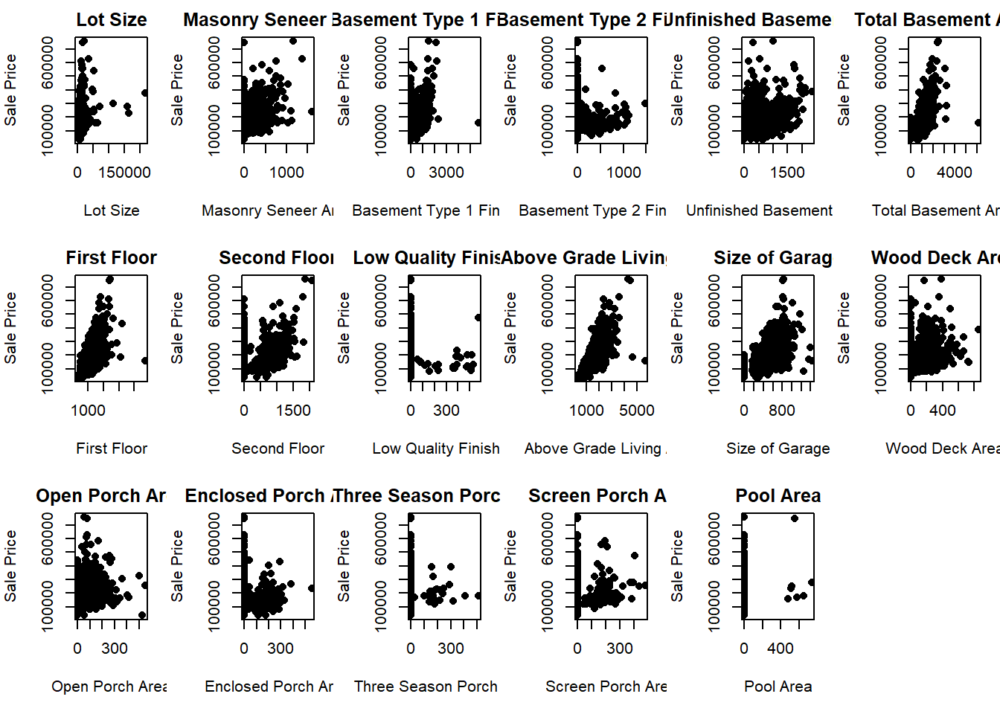
It is clearly seen that there is positive correlation between price and areas i.e. if the area increases price will also increases expect 3SsnPorch (three season porch) and PoolArea.
Neighborhood vs Sale Price
```{r}
ggplot(train, aes(x = Neighborhood, y = SalePrice)) +
geom_bar(stat = "identity") +
labs(x = NULL, y = "Sale Price") +
ggtitle("Neighborhood") +
scale_y_continuous(labels = scales::comma) +
theme(axis.text.x = element_text(angle = 90, hjust = 1))
```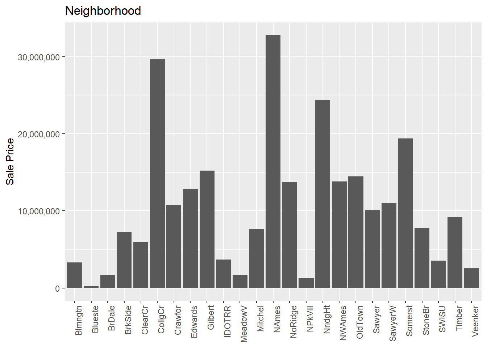
Note: We can see that the prices of the house having NoRidge, NridgHt, StoneBr and Timber neighborhoods are very high.
Building type, House Style
```{r}
labels <- c("BldgType", "HouseStyle")
plt <- ggplot(train, aes(x = train[[labels[1]]], y = train[["SalePrice"]])) +
geom_bar(stat = "identity") +
labs(x = NULL) +
ggtitle(labels[1])
plt <- plt + facet_wrap(~ train[[labels[2]]], nrow = 1)
plt <- plt + theme_minimal() +
scale_y_continuous(labels = scales::comma) +
theme(plot.title = element_text(size = 14),
axis.text.x = element_text(angle = 90, hjust = 1))
print(plt)
```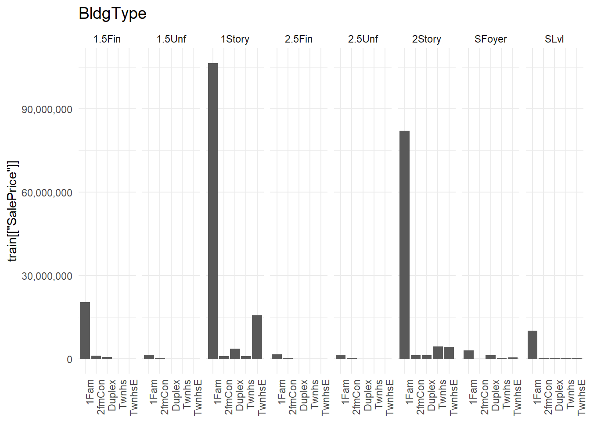
House Quality
```{r}
par(mfrow = c(2, 4))
labels <- c("OverallQual", "ExterQual", "BsmtQual", "HeatingQC", "KitchenQual", "FireplaceQu", "GarageQual")
col <- 1
for (i in labels) {
if (col < 9) {
plot_col <- col %% 4
if (plot_col == 0) {
plot_col <- 4
}
plot_row <- ceiling(col / 4)
plot_index <- (plot_row - 1) * 4 + plot_col
barplot(tapply(train$SalePrice, train[, i], mean), xlab = i, ylab = "SalePrice")
title(main = i)
}
col <- col + 1
}
```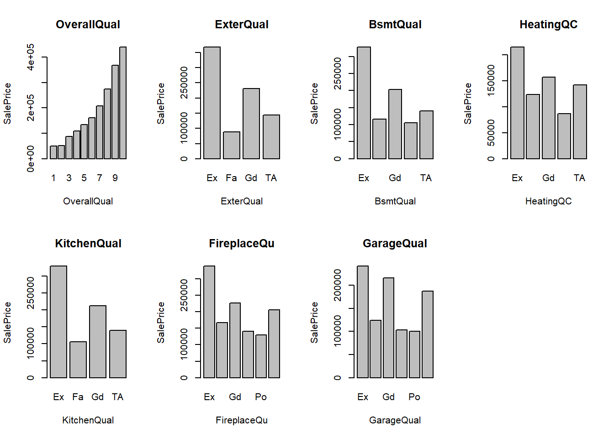
Note: It can be seen that there is positive relation between quality and price. Price increases according to the quality.
House condition
```{r}
labels <- c("OverallCond", "ExterCond", "BsmtCond", "GarageCond")
cols <- 1
plots <- list()
for (i in labels) {
if (cols < 5) {
plt <- ggplot(train, aes(x = train[[i]], y = train[["SalePrice"]])) +
geom_bar(stat = "identity") +
labs(x = NULL) +
ggtitle(i) +
theme_minimal() +
theme(plot.title = element_text(size = 14),
axis.text.x = element_text(angle = 90, hjust = 1)) +
scale_y_continuous(labels = scales::comma)
plots[[cols]] <- plt
}
cols <- cols + 1
}
grid.arrange(grobs = plots, nrow = 2, ncol = 2, top = "Subplots")
```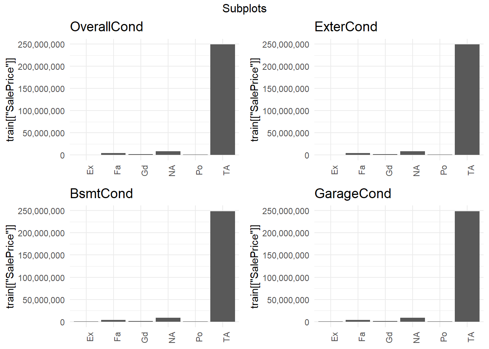
Note: Prices of the house having Ex (excellent) and Gd (good) condition are very high.
Bathroom condition
```{r}
# Custom function to format labels in millions
formatMillions <- function(x) {
paste0(format(x / 1e6, big.mark = ","), "")
}
# Create individual bar plots
plot1 <- ggplot(train, aes(x = BsmtFullBath, y = SalePrice)) +
geom_bar(stat = "identity") +
labs(x = NULL, y = "Sale Price (in million)") +
ggtitle("BsmtFullBath") +
scale_y_continuous(labels = formatMillions)
plot2 <- ggplot(train, aes(x = BsmtHalfBath, y = SalePrice)) +
geom_bar(stat = "identity") +
labs(x = NULL, y = "Sale Price (in million)") +
ggtitle("BsmtHalfBath") +
scale_y_continuous(labels = formatMillions)
plot3 <- ggplot(train, aes(x = FullBath, y = SalePrice)) +
geom_bar(stat = "identity") +
labs(x = NULL, y = "Sale Price (in million)") +
ggtitle("FullBath") +
scale_y_continuous(labels = formatMillions)
plot4 <- ggplot(train, aes(x = HalfBath, y = SalePrice)) +
geom_bar(stat = "identity") +
labs(x = NULL, y = "Sale Price (in million)") +
ggtitle("HalfBath") +
scale_y_continuous(labels = formatMillions)
# Arrange the plots in a grid
grid.arrange(plot1, plot2, plot3, plot4, ncol = 2)
```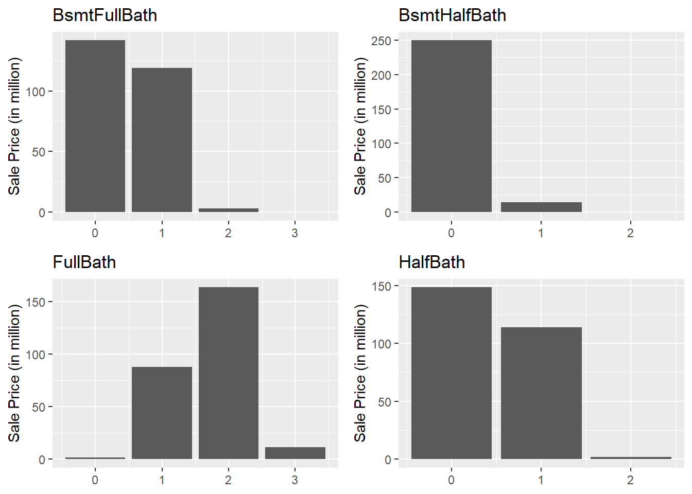
Roof style and material
```{r}
par(mfrow = c(1, 2))
labels <- c("RoofStyle", "RoofMatl")
for (i in 1:length(labels)) {
if (i <= 2) {
barplot(tapply(train$SalePrice, train[, labels[i]], mean), xlab = labels[i], ylab = "SalePrice")
title(main = labels[i])
}
}
```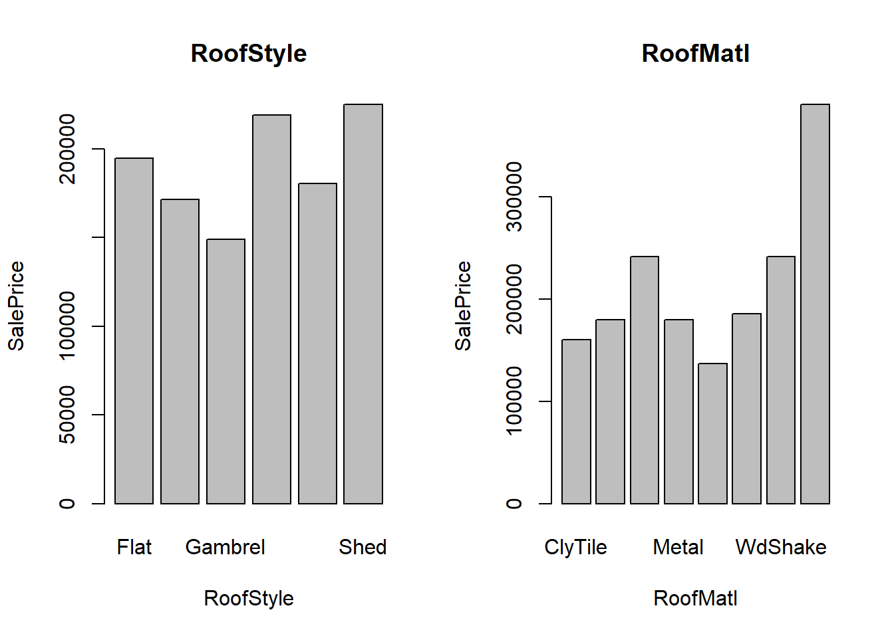
Basement
```{r}
# Create a list of labels
labels <- c("BsmtExposure", "BsmtFinType1", "BsmtFinType2")
# Create an empty list to store the plots
plots <- list()
# Loop through the labels and create bar plots
for (i in seq_along(labels)) {
plot <- ggplot(train, aes_string(x = labels[i], y = "SalePrice")) +
geom_bar(stat = "identity") +
labs(x = NULL, y = "Sale Price") +
ggtitle(labels[i]) +
scale_y_continuous(labels = dollar_format(scale = 1e-6, prefix = "$"))
plots[[i]] <- plot
}
# Arrange the plots in a grid
grid.arrange(grobs = plots, ncol = 3)
```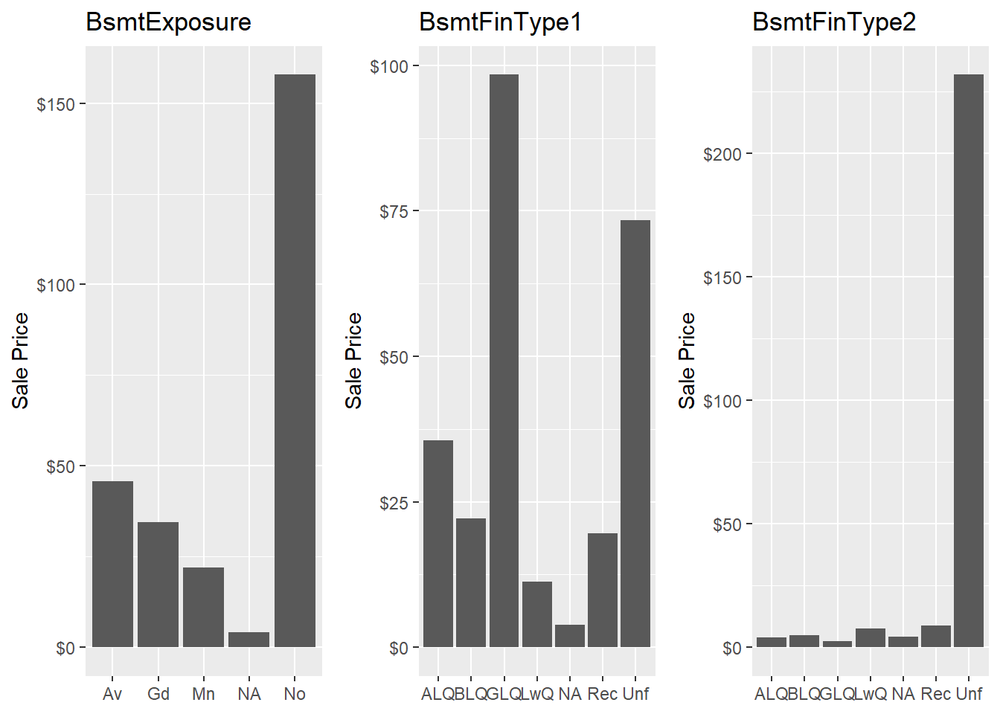
Garage
```{r}
par(mfrow = c(1, 3))
labels <- c("GarageType", "GarageFinish", "GarageCars")
for (i in 1:length(labels)) {
if (i <= 3) {
barplot(tapply(train$SalePrice, train[, labels[i]], mean), xlab = labels[i], ylab = "SalePrice")
title(main = labels[i])
}
}
```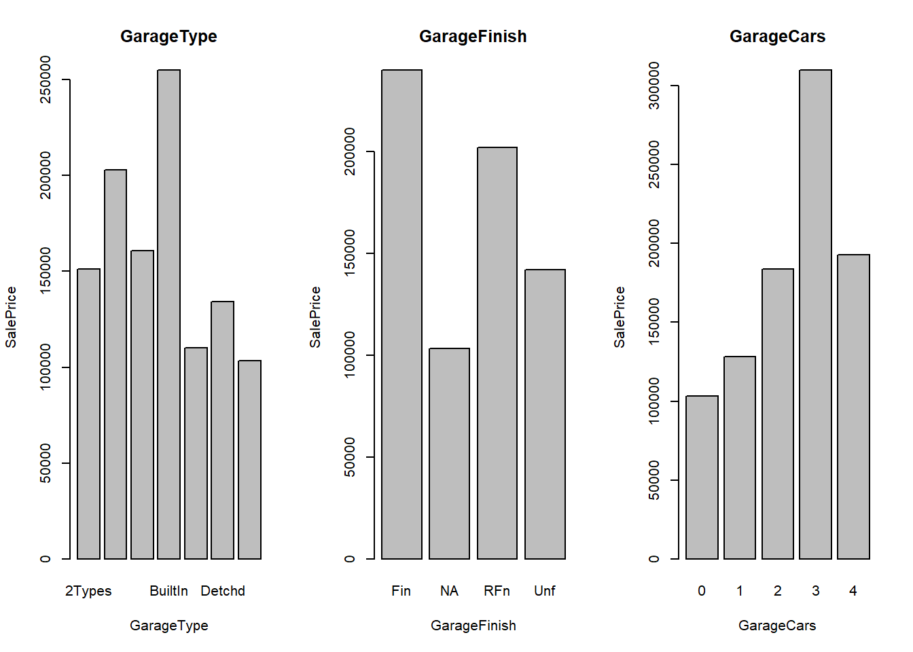
Month and Year of Sold
```{r}
par(mfrow = c(1, 3))
yearsold <- c(2006:2010)
monthsold <- c("January", "February", "March", "April", "May", "June", "July", "August", "September", "October", "November", "December")
years <- table(train$YrSold)
months <- table(train$MoSold)
pie(years, labels = yearsold, explode = c(0.1, 0.1, 0.1, 0.1, 0.1), col = rainbow(length(yearsold)), main = "Year Sold", cex.main = 1.2)
pie(months, labels = monthsold, explode = rep(0.1, 12), col = rainbow(length(monthsold)), main = "Month Sold", cex.main = 1.2)
```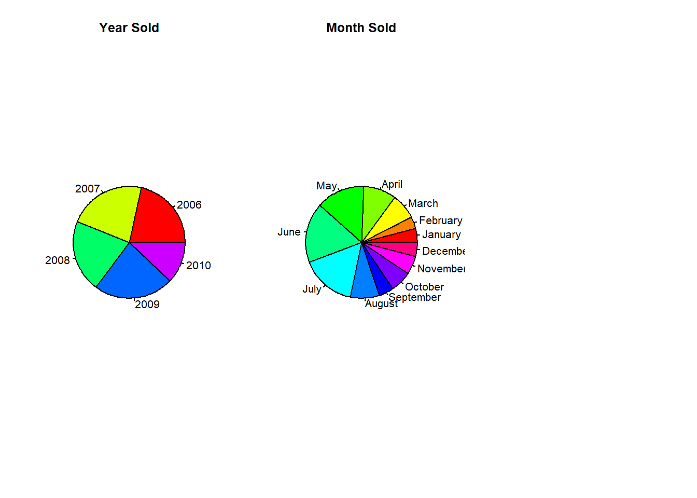
Note: Maximum houses were sold in year 2009 and in month of June. We can also see a decline in sales from 2009 to 2010.
2.5.Transform Skewed Features
Plot histogram for each continuous feature to see if a transformation is necessary
```{r}
par(mfrow = c(4, 5), mar = c(4, 4, 2, 1), oma = c(0, 0, 2, 0))
features <- colnames(train)
col <- 1
for (feature in features) {
if (class(train[[feature]]) != "character") {
if (!(feature %in% c("OverallQual", "OverallCond", "YearBuilt", "YearRemodAdd", "BsmtFullBath", "BsmtHalfBath", "FullBath", "HalfBath", "BedroomAbvGr", "KitchenAbvGr", "TotRmsAbvGrd", "Fireplaces", "GarageYrBlt", "GarageCars", "MoSold", "YrSold", "SalePrice"))) {
if (col < 21) {
hist(train[[feature]], main = paste("Histogram for", feature), xlab = "", ylab = "", col = "skyblue")
}
col <- col + 1
}
}
}
```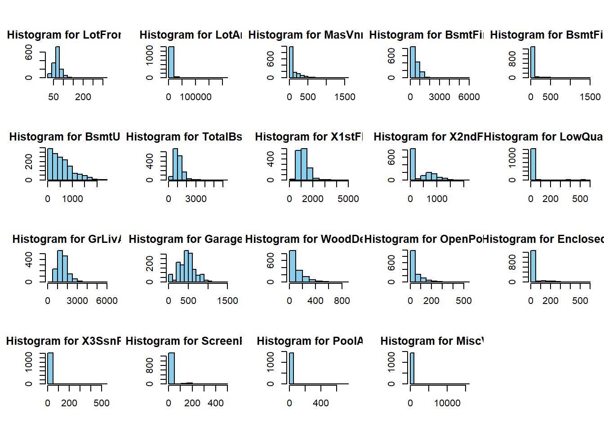
Box-Cox Power Transformation:
```{r}
train$LotFrontage <- train$LotFrontage^(1/3)
train$LotArea <- train$LotArea^(1/6)
train$MasVnrArea <- train$MasVnrArea^(1/1.5)
train$BsmtFinSF1 <- train$BsmtFinSF1^(1/1.4)
train$BsmtUnfSF <- train$BsmtUnfSF^(1/1.5)
train$TotalBsmtSF <- train$TotalBsmtSF^(1/1.4)
train$X1stFlrSF <- train$X1stFlrSF^(1/4)
train$GrLivArea <- train$GrLivArea^(1/4.5)
train$GarageArea <- train$GarageArea^(1/1.1)
train$WoodDeckSF <- train$WoodDeckSF^(1/1.2)
train$OpenPorchSF <- train$OpenPorchSF^(1/2.5)
```2.6.Convert Categorical Features To Numeric
```{r}
features <- colnames(train)
for (feature in features) {
if (class(train[[feature]]) == "character") {
train[[feature]] <- as.integer(factor(train[[feature]]))
test[[feature]] <- as.integer(factor(test[[feature]]))
}
}
```Split Into Train And Test Set
Drop unnecessary features
```{r}
X <- train[, !colnames(train) %in% c("SalePrice")]
# Create the target variable
y <- train$SalePrice
```Set the seed for reproducibility
```{r}
set.seed(42)
```Split the data into training and test sets
```{r}
train_indices <- sample(1:nrow(train), size = round(0.8 * nrow(train)), replace = FALSE)
X_train <- X[train_indices, ]
y_train <- y[train_indices]
X_test <- X[-train_indices, ]
y_test <- y[-train_indices]
```Standardize Features
Fit the scaler on the training data
```{r}
scaler <- scale(X_train)
# Apply the scaler to the training data
X_train_scaled <- scaler
# Apply the scaler to the test data
X_test_scaled <- scale(X_test, center = attr(scaler, "scaled:center"), scale = attr(scaler, "scaled:scale"))
```Calculate the mean and standard deviation from the training set:
```{r}
scale_params <- apply(X_train, 2, mean)
scale_sd <- apply(X_train, 2, sd)
# Scale the training set
X_train_scaled <- scale(X_train, center = scale_params, scale = scale_sd)
# Scale the test set using the scaling parameters from the training set
X_test_scaled <- scale(X_test, center = scale_params, scale = scale_sd)
```MODELS
Let’s build initial functions for the models:
```{r}
# build finction for loss function
rmse_cv <- function(model) {
rmse <- sqrt(-mean(cross_val_score(model, X, y, scoring = "neg_mean_squared_error", cv = 5)))
return(round(rmse, 4))
}
evaluation <- function(y, predictions) {
mae <- mean(abs(y - predictions))
mse <- mean((y - predictions)^2)
rmse <- sqrt(mse)
r_squared <- 1 - (sum((y - predictions)^2) / sum((y - mean(y))^2))
return(list(mae = round(mae, 4), mse = round(mse, 4), rmse = round(rmse, 4), r_squared = round(r_squared, 4)))
}
models <- data.frame(Model = character(),
MAE = numeric(),
MSE = numeric(),
RMSE = numeric(),
R2_Score = numeric(),
RMSE_CV = numeric(),
stringsAsFactors = FALSE)
```1. Linear Regression
Well, firstly create linear regression model
```{r}
## Create a linear regression model
lin_reg <- lm(y_train ~ ., data = X_train)
## Make predictions on the test set
ln_predictions <- predict(lin_reg, newdata = X_test)
## Evaluate the model
mae <- mean(abs(ln_predictions - y_test))
mse <- mean((ln_predictions - y_test)^2)
rmse <- sqrt(mse)
r_squared <- summary(lin_reg)$r.squared
### Print the evaluation metrics
print(paste("MAE:", mae))
print(paste("MSE:", mse))
print(paste("RMSE:", rmse))
print(paste("R2 Score:", r_squared))
## Perform cross-validation and calculate RMSE
rmse_cross_val <- sqrt(mean((predict(lin_reg, newdata = X_train) - y_train)^2))
### Print the cross-validated RMSE
print(paste("RMSE Cross-Validation:", rmse_cross_val))
## Create a data frame to store the model results
new_row <- data.frame(
Model = "LinearRegression",
MAE = mae,
MSE = mse,
RMSE = rmse,
R2_Score = r_squared,
RMSE_CV = rmse_cross_val,
stringsAsFactors = FALSE # Add this line to prevent factors
)
## Match the column names
colnames(new_row) <- colnames(models)
## Append the new row to the existing data frame (models)
models <- rbind(models, new_row)
```[1] "MAE: 20276.1649935041"
[1] "MSE: 1174531451.46711"
[1] "RMSE: 34271.4378377551"
[1] "R2 Score: 0.855246479023401"
[1] "RMSE Cross-Validation: 29897.7985479486"2. Decision Tree
```{r}
## Train the decision tree model
d_tree <- rpart(y_train ~ ., data = X_train)
## Make predictions on the test set
predictions <- predict(d_tree, newdata = X_test)
## Evaluate the model
mae <- mean(abs(predictions - y_test))
mse <- mean((predictions - y_test)^2)
rmse <- sqrt(mse)
r_squared <- cor(predictions, y_test)^2
## Print the MAE
cat("MAE:", mae, "\n")
## Print the MSE
cat("MSE:", mse, "\n")
## Print the RMSE
cat("RMSE:", rmse, "\n")
## Print the R2 Score
cat("R2 Score:", r_squared, "\n")
## Perform cross-validation
cv_results <- rpart::rpart.control(cp = 0.01) # Set the complexity parameter
cv_model <- rpart(y_train ~ ., data = X_train, control = cv_results)
cv_predictions <- predict(cv_model, newdata = X_train)
rmse_cross_val <- sqrt(mean((cv_predictions - y_train)^2))
## Print the RMSE Cross-Validation
cat("RMSE Cross-Validation:", round(rmse_cross_val, 2), "\n")
## Create a new row for the model's results
new_row <- data.frame(
Model = "DecisionTree",
MAE = mae,
MSE = mse,
RMSE = rmse,
R2_Score = r_squared,
RMSE_CV = rmse_cross_val,
stringsAsFactors = FALSE
)
## Match the column names
colnames(new_row) <- colnames(models)
## Append the new row to the existing models dataframe
models <- rbind(models, new_row)
```MAE: 28836.32
MSE: 1722934536
RMSE: 41508.25
R2 Score: 0.7578854
RMSE Cross-Validation: 38219.59 3. Random Forest
```{r}
# Define the cross-validation control
ctrl <- trainControl(method = "cv", number = 5)
# Fit the Random Forest model with cross-validation
random_forest <- train(x = X_train, y = y_train, method = "rf", ntree = 250, trControl = ctrl)
# Make predictions on the test set
predictions <- predict(random_forest, X_test)
# Evaluate the model
evaluation <- evaluation(y_test, predictions)
# Print the evaluation metrics
print(paste("MAE:", round(evaluation$mae, 4)))
print(paste("MSE:", round(evaluation$mse, 4)))
print(paste("RMSE:", round(evaluation$rmse, 4)))
print(paste("R2 Score:", round(evaluation$r_squared, 4)))
# Calculate RMSE using cross-validation
rmse_cross_val <- sqrt(random_forest$results$RMSE)
print(paste("RMSE Cross-Validation:", round(rmse_cross_val, 4)))
# Create a new row for the models dataframe
new_row <- data.frame(Model = "RandomForest",
MAE = evaluation$mae,
MSE = evaluation$mse,
RMSE = evaluation$rmse,
R2_Score = evaluation$r_squared,
RMSE_CV = rmse_cross_val)
# Append the new row to the models dataframe
models <- rbind(models, new_row)
```[1] "MAE: 16487.9802"
[1] "MSE: 707359751.9236"
[1] "RMSE: 26596.2357"
[1] "R2 Score: 0.8962"
[1] "RMSE Cross-Validation: 186.4359" "RMSE Cross-Validation: 172.8728"
[3] "RMSE Cross-Validation: 174.381" 4. Extreme Gradient Boosting (XGBoost)
```{r}
# Convert the data to DMatrix format
dtrain <- xgb.DMatrix(data = as.matrix(X_train), label = y_train)
dtest <- xgb.DMatrix(data = as.matrix(X_test))
# Set the parameters for the XGBoost model
params <- list(
objective = "reg:squarederror",
eval_metric = "rmse"
)
# Train the XGBoost model
Xg_boost <- xgb.train(params = params, data = dtrain, nrounds = 100)
# Predict on the test set
predictions <- predict(Xg_boost, newdata = dtest)
# Calculate evaluation metrics
mae <- mean(abs(predictions - y_test))
mse <- mean((predictions - y_test)^2)
rmse <- sqrt(mse)
r_squared <- 1 - mse / var(y_test)
cat("MAE:", mae, "\n")
cat("MSE:", mse, "\n")
cat("RMSE:", rmse, "\n")
cat("R2 Score:", r_squared, "\n")
# Perform cross-validation to calculate RMSE
cv_result <- xgb.cv(params = params, data = dtrain, nfold = 5, nrounds = 100)
rmse_cross_val <- min(cv_result$evaluation_log$test_rmse_mean)
print(paste("RMSE Cross-Validation:", round(rmse_cross_val, 4)))
# Create a new row for the model results
new_row <- data.frame(Model = "XGradientBoosting",
MAE = mae,
MSE = mse,
RMSE = rmse,
R2_Score = r_squared,
RMSE_CV = rmse_cross_val,
stringsAsFactors = FALSE )
# Append the new row to the models data frame
models <- rbind(models, new_row)
```MAE: 17603.54
MSE: 1026421853
RMSE: 32037.82
R2 Score: 0.8499364
[1] train-rmse:140888.796991+1657.542273 test-rmse:141246.172018+7693.047034
[2] train-rmse:101737.350870+1249.323832 test-rmse:103783.928445+6767.418472
[3] train-rmse:74111.894293+909.868698 test-rmse:77499.150973+6002.352619
[4] train-rmse:54614.997015+764.273329 test-rmse:59552.955067+5409.323938
[5] train-rmse:40857.821446+666.652290 test-rmse:48135.580786+5180.076146
[6] train-rmse:31092.985909+630.329492 test-rmse:41122.743027+5190.850446
[7] train-rmse:24151.716632+613.045868 test-rmse:36736.799798+4948.728045
[8] train-rmse:19341.415041+554.145084 test-rmse:33978.241743+4623.212426
[9] train-rmse:15992.774386+485.793152 test-rmse:32507.807566+4554.019498
[10] train-rmse:13644.310686+498.380756 test-rmse:31707.120232+4578.926761
[11] train-rmse:12008.379952+460.530640 test-rmse:31148.826960+4352.072782
[12] train-rmse:10897.381497+466.104011 test-rmse:30865.088023+4302.626399
[13] train-rmse:10077.923246+465.993540 test-rmse:30602.514310+4249.080192
[14] train-rmse:9496.632723+463.064796 test-rmse:30500.472443+4243.513973
[15] train-rmse:8981.556010+475.443393 test-rmse:30398.759423+4192.266592
[16] train-rmse:8509.639546+482.993614 test-rmse:30292.241056+4161.157670
[17] train-rmse:8152.953448+437.956874 test-rmse:30285.315962+4085.831241
[18] train-rmse:7890.481313+482.564636 test-rmse:30229.890361+4090.614030
[19] train-rmse:7628.414926+493.550703 test-rmse:30228.681782+4081.863035
[20] train-rmse:7322.594688+449.508214 test-rmse:30161.803780+4108.252914
[21] train-rmse:7119.502564+512.322026 test-rmse:30114.810066+4127.116779
[22] train-rmse:6948.799701+505.186440 test-rmse:30098.152727+4138.506371
[23] train-rmse:6772.286390+529.067291 test-rmse:30119.883356+4130.443038
[24] train-rmse:6563.689553+449.829972 test-rmse:30077.648100+4125.876869
[25] train-rmse:6373.326395+403.584943 test-rmse:30098.166051+4119.315820
[26] train-rmse:6203.723306+424.988961 test-rmse:30108.852660+4112.035544
[27] train-rmse:6017.891998+445.800261 test-rmse:30065.285113+4121.835054
[28] train-rmse:5768.993777+522.892538 test-rmse:30044.907651+4119.960242
[29] train-rmse:5475.956583+527.840888 test-rmse:30045.487757+4121.796867
[30] train-rmse:5263.813749+516.041308 test-rmse:30055.142833+4134.325625
[31] train-rmse:5065.366786+469.484236 test-rmse:30059.959975+4135.906142
[32] train-rmse:4960.801679+434.565432 test-rmse:30030.725550+4135.841640
[33] train-rmse:4795.478287+445.491050 test-rmse:30020.949326+4147.621496
[34] train-rmse:4714.159076+436.616842 test-rmse:30020.728523+4125.791442
[35] train-rmse:4605.865235+434.948055 test-rmse:29998.502044+4144.056463
[36] train-rmse:4481.845249+406.109731 test-rmse:30002.710074+4154.989436
[37] train-rmse:4336.677598+403.956630 test-rmse:30002.324854+4166.991265
[38] train-rmse:4230.729911+413.982412 test-rmse:30006.219061+4163.296605
[39] train-rmse:4103.906363+400.602200 test-rmse:30001.508438+4149.737929
[40] train-rmse:3929.814336+363.534235 test-rmse:29999.908318+4161.909092
[41] train-rmse:3776.863250+334.887009 test-rmse:30011.006204+4149.815317
[42] train-rmse:3708.380418+313.742874 test-rmse:30017.758866+4143.379066
[43] train-rmse:3613.385365+341.675124 test-rmse:30019.163837+4144.381811
[44] train-rmse:3509.429889+332.549952 test-rmse:30020.637425+4132.161886
[45] train-rmse:3418.888903+300.138885 test-rmse:30024.265768+4129.290408
[46] train-rmse:3332.919636+287.333641 test-rmse:30034.830428+4119.787008
[47] train-rmse:3234.501152+277.408666 test-rmse:30049.058159+4112.818307
[48] train-rmse:3164.627897+278.116073 test-rmse:30059.250298+4110.982630
[49] train-rmse:3104.354860+273.673276 test-rmse:30049.608394+4117.755793
[50] train-rmse:3026.219515+253.766650 test-rmse:30055.577835+4109.651713
[51] train-rmse:2954.227647+247.088676 test-rmse:30062.656690+4102.228666
[52] train-rmse:2899.967433+251.864255 test-rmse:30069.935360+4113.183386
[53] train-rmse:2815.509723+211.872163 test-rmse:30061.557987+4109.492767
[54] train-rmse:2757.847076+234.076619 test-rmse:30054.703013+4113.373795
[55] train-rmse:2698.182467+236.766455 test-rmse:30058.670151+4120.380502
[56] train-rmse:2630.451918+231.780182 test-rmse:30070.919902+4125.398316
[57] train-rmse:2551.276971+260.753136 test-rmse:30073.497445+4129.213875
[58] train-rmse:2498.266264+256.014221 test-rmse:30073.584535+4126.613613
[59] train-rmse:2421.942141+237.371051 test-rmse:30077.259633+4122.970988
[60] train-rmse:2358.089692+244.010629 test-rmse:30072.976544+4129.437773
[61] train-rmse:2289.440043+241.482158 test-rmse:30078.633152+4121.690463
[62] train-rmse:2231.618822+250.514111 test-rmse:30074.245654+4119.716513
[63] train-rmse:2175.488801+249.112546 test-rmse:30067.017983+4102.900648
[64] train-rmse:2104.793851+224.988000 test-rmse:30070.586478+4101.749792
[65] train-rmse:2031.402099+203.667900 test-rmse:30071.342529+4100.475742
[66] train-rmse:1965.223623+214.787517 test-rmse:30078.532096+4105.011865
[67] train-rmse:1914.568847+197.234526 test-rmse:30079.368622+4100.035880
[68] train-rmse:1858.575340+182.470537 test-rmse:30082.468824+4100.085163
[69] train-rmse:1784.706064+190.124919 test-rmse:30077.858680+4116.687044
[70] train-rmse:1748.083192+193.763095 test-rmse:30080.309524+4112.782311
[71] train-rmse:1694.781542+194.409185 test-rmse:30077.488110+4112.080110
[72] train-rmse:1648.421792+189.844155 test-rmse:30075.520990+4113.023075
[73] train-rmse:1587.681767+178.839554 test-rmse:30071.698972+4113.391105
[74] train-rmse:1534.056950+204.014216 test-rmse:30070.566277+4116.343297
[75] train-rmse:1485.222889+203.302202 test-rmse:30065.405895+4114.312705
[76] train-rmse:1450.865208+211.798423 test-rmse:30066.302016+4109.533967
[77] train-rmse:1399.856595+199.105689 test-rmse:30070.056358+4107.672878
[78] train-rmse:1363.382935+195.842361 test-rmse:30068.443910+4105.394124
[79] train-rmse:1321.562738+182.773817 test-rmse:30066.923084+4108.621130
[80] train-rmse:1295.507525+179.397845 test-rmse:30066.193232+4113.360667
[81] train-rmse:1259.468966+179.250793 test-rmse:30065.425846+4108.177503
[82] train-rmse:1227.414080+177.119478 test-rmse:30067.918307+4101.707726
[83] train-rmse:1193.822765+178.019850 test-rmse:30066.591340+4097.582280
[84] train-rmse:1169.116438+168.798878 test-rmse:30070.688534+4096.065638
[85] train-rmse:1136.332131+169.094343 test-rmse:30076.907816+4096.761644
[86] train-rmse:1092.849018+162.296107 test-rmse:30082.326513+4104.163062
[87] train-rmse:1058.690050+157.044518 test-rmse:30082.033923+4102.918683
[88] train-rmse:1024.849577+144.392250 test-rmse:30085.117168+4106.094151
[89] train-rmse:999.980177+131.126085 test-rmse:30084.964031+4100.768509
[90] train-rmse:973.092014+134.736985 test-rmse:30083.323614+4098.684988
[91] train-rmse:953.925856+142.439488 test-rmse:30085.563816+4101.737427
[92] train-rmse:926.184678+142.184719 test-rmse:30088.264864+4099.357876
[93] train-rmse:889.648011+129.771496 test-rmse:30090.055655+4102.392218
[94] train-rmse:870.785256+123.450704 test-rmse:30090.189488+4100.364852
[95] train-rmse:839.854826+123.559100 test-rmse:30089.859642+4103.324194
[96] train-rmse:816.503404+135.085715 test-rmse:30087.567207+4102.948658
[97] train-rmse:792.533006+130.139913 test-rmse:30089.922093+4104.746685
[98] train-rmse:776.857750+130.261714 test-rmse:30088.595959+4103.767859
[99] train-rmse:752.077305+119.373102 test-rmse:30094.088789+4106.972139
[100] train-rmse:727.154242+121.908010 test-rmse:30096.892478+4104.851245
[1] "RMSE Cross-Validation: 29998.502"5. Support Vector Regression (SVR)
```{r}
# Fit the SVR model
svr <- svm(X_train, y_train, kernel = "radial", cost = 100000)
# Predict on the test set
predictions <- predict(svr, X_test)
# Calculate evaluation metrics
mae <- mean(abs(predictions - y_test))
mse <- mean((predictions - y_test)^2)
rmse <- sqrt(mse)
r_squared <- 1 - mse / var(y_test)
cat("MAE:", mae, "\n")
cat("MSE:", mse, "\n")
cat("RMSE:", rmse, "\n")
cat("R2_Score:", r_squared, "\n")
# Perform cross-validation to calculate RMSE
set.seed(42)
folds <- 5
cv_results <- vector("double", folds)
# Split the data into folds and perform cross-validation
for (i in 1:folds) {
fold_indices <- seq(from = 1, to = nrow(X), length.out = folds + 1)
fold_indices <- fold_indices[i:(i+1)]
train_indices <- setdiff(1:nrow(X), fold_indices)
fold_X_train <- X[train_indices, ]
fold_y_train <- y[train_indices]
fold_X_test <- X[fold_indices, ]
fold_y_test <- y[fold_indices]
fold_svr <- svm(fold_X_train, fold_y_train, kernel = "radial", cost = 100000)
fold_predictions <- predict(fold_svr, fold_X_test)
cv_results[i] <- sqrt(mean((fold_predictions - fold_y_test)^2))
}
cv_rmse <- mean(cv_results)
cat("RMSE_CV:", cv_rmse, "\n")
# Create a new row for the model results
new_row <- data.frame(Model = "SVR",
MAE = mae,
MSE = mse,
RMSE = rmse,
R2_Score = r_squared,
RMSE_CV = cv_rmse)
# Append the new row to the models data frame
models <- rbind(models, new_row)
```MAE: 20515.66
MSE: 2010782287
RMSE: 44841.75
R2_Score: 0.7060223
RMSE_CV: 7096.218 6.Gradient Boosting
```{r}
# Gradient Bossting
g_boost <- gbm(y_train ~ ., data = X_train, n.trees = 100, interaction.depth = 3,distribution = "gaussian")
predictions <- predict(g_boost, newdata = X_test, n.trees = 100)
mae <- mean(abs(predictions - y_test))
mse <- mean((predictions - y_test)^2)
rmse <- sqrt(mse)
r_squared <- 1 - (sum((y_test - predictions)^2) / sum((y_test - mean(y_test))^2))
print(paste("MAE:", mae))
print(paste("MSE:", mse))
print(paste("RMSE:", rmse))
print(paste("R2 Score:", r_squared))
rmse_cross_val <- sqrt(crossprod(y_train - predict(g_boost, newdata = X_train, n.trees = 100))/(length(y_train) - 1))
print(paste("RMSE_CV:", rmse_cross_val))
new_row <- data.frame(Model = "GradientBoosting",
MAE = mae,
MSE = mse,
RMSE = rmse,
R2_Score = r_squared,
RMSE_CV = rmse_cross_val)
models <- rbind(models, new_row)
```[1] "MAE: 17237.9965197921"
[1] "MSE: 877090487.880508"
[1] "RMSE: 29615.7135298224"
[1] "R2 Score: 0.871328127494256"
[1] "RMSE_CV: 21275.8554620899"Comparison of the results of the models
```{r}
comparison_models <- models[order(models$RMSE), ]
comparison_models
``` Model MAE MSE RMSE R2_Score RMSE_CV
3 RandomForest 16487.98 707359752 26596.24 0.8962000 186.4359
4 RandomForest 16487.98 707359752 26596.24 0.8962000 172.8728
5 RandomForest 16487.98 707359752 26596.24 0.8962000 174.3810
8 GradientBoosting 17238.00 877090488 29615.71 0.8713281 21275.8555
6 XGradientBoosting 17603.54 1026421853 32037.82 0.8499364 29998.5020
1 LinearRegression 20276.16 1174531451 34271.44 0.8552465 29897.7985
2 DecisionTree 28836.32 1722934536 41508.25 0.7578854 38219.5923
7 SVR 20515.66 2010782287 44841.75 0.7060223 7096.2183Conclusion
After evaluating the R2, MAE, and RMSE scores of various ML models, it was discovered that Random Forest achieved the highest performance on the chosen dataset, with GradientBoost securing the second position.